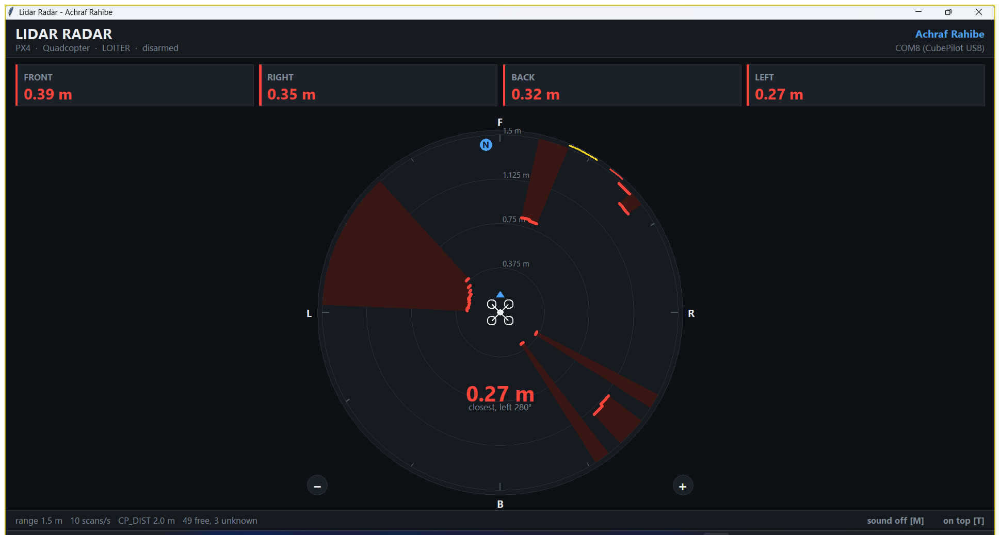

Zero bytes
The driver started automatically on TELEM2 at the right speed, but status showed bytes sent and zero received, with the motor spinning. Zero, not garbage, meant nothing reached the receive pin at all, so it was not a parsing or baud-rate problem.
Check the software path against ArduPilot
I compared every layer with the ArduPilot setup that worked the day before: same UART5, same pins, the same 256000 baud passed through NuttX, flow control off, no inversion, nothing else on the port. On paper PX4 was right.
A/B test with known-good firmware
Flashing ArduCopter back gave the same silence, until the lidar alone was power-cycled. The lidar itself had locked up, and rebooting the flight controller never helped because the lidar kept its power.
Find the cause
Starting the driver by hand a minute after boot still found a frozen lidar, so the driver's commands were not to blame. The answer was in PX4's board code: the 6X configures its 5 V peripheral rail off early in boot and switches it on later, so every PX4 cold start gives TELEM devices a short power cut in the middle of their own start-up. ArduPilot keeps that rail on.
The fix and the proof
A two-line board patch keeps the rail on from the start, as ArduPilot does. With it, the lidar streamed on the first try in four out of four full power-offs, with no restarts or errors. The patch is applied automatically by the install script.
Project record
Scope: PX4 driver and patches, ground-station displays and bench integration on two flight controllers. Collision Prevention in flight has not been tested yet.